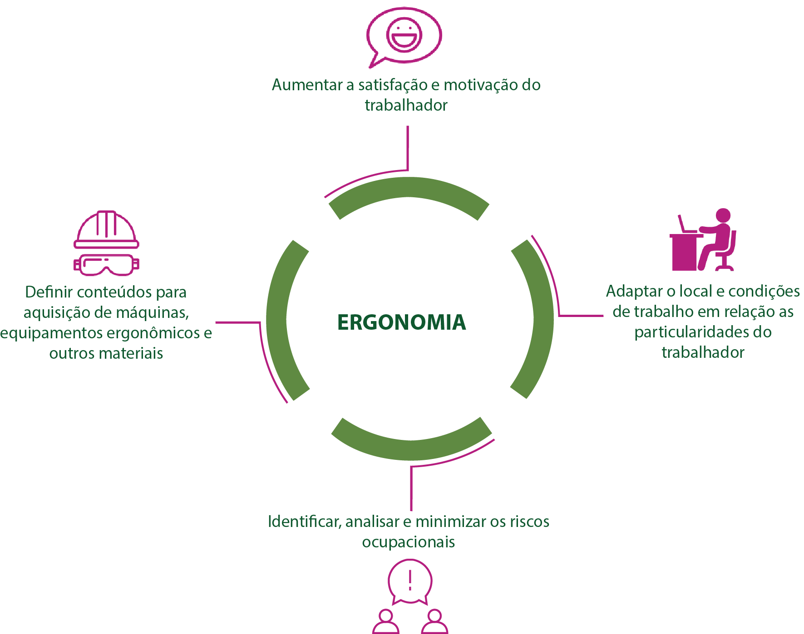

A falta de tempo e a indisposição para a prática da atividade física são alguns elementos, que impossibilitam o indivíduo a uma vida ativa. Isso não é desculpa para se não se exercitar, já que cada um pode buscar formas e estratégias de praticar ou de fazer o corpo movimentar-se nas várias atividades diárias como, por exemplo: optar por subir escadas, evitando as escadas rolantes; se seu trabalho é executado de forma em movimentos repetitivos, deve-se realizar pausas para simples alongamentos.
Desta forma, apresentamos algumas dicas importantes para buscar uma vida com bem-estar:
Hidrate-se |
REALIZE CAMINHADAS |
TENHA UMA ALIMENTAÇÃO SAUDÁVEL |
|---|---|---|
|  | ||
A água é fundamental para o transporte de algumas vitaminas hidrossolúveis, além de que ajuda na hidratação da pele, sendo essencial para que o corpo fique disposto durante todo dia. |
Mesmo que estas sejam de pequenos percursos, pois a caminhada auxilia em vários fatores e trás muitos benefícios para a saúde |
Evitar alimentos ricos em gorduras saturadas, sódio e açúcares. Uma alimentação adequada é essencial para alcançar uma qualidade de vida. |